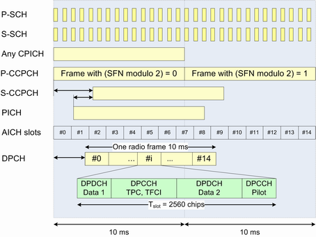

3GPP specifies different physical channel types. The channels are generated by mapping transport channel information into a physical channel and differ in their physical parameters.
Common channels carry messages that are not directed at a particular UE; they are point-to-multipoint channels. Dedicated channels carry information related to a particular connection; they are point-to-point channels. Shared channels are dedicated channels shared by several UEs. At a given time, a shared channel is assigned to one UE only, but the assignment can change within a few timeslots.
An overview of the physical channels of the downlink signal is given in the following table. The third column lists some channel properties. The spreading factor (SF) and the symbol rate are indicated.
Channel type | Purpose | Properties |
|---|---|---|
Primary common pilot channel (P-CPICH) | Determination of the scrambling code out of a scrambling code group Phase reference for SCH and other downlink physical channels | SF = 256, 15 ksps Fixed channelization code c256, 0 Primary scrambling code Predefined symbol sequence |
Secondary common pilot channel (S-CPICH) | Alternative phase reference for the cell; also used as a phase reference for some conformance tests | SF = 256, 15 ksps Predefined symbol sequence Zero or one S-CPICH channel per cell |
Primary synchronization channel (P-SCH) | Slot synchronization between the NodeB and the instrument | Fixed 256-chip code (primary synchronization code) Time-multiplexed with P-CCPCH, 256 chips per slot No channelization, no scrambling |
Secondary synchronization channel (S-SCH) | Frame synchronization between the NodeB and the instrument Provides the scrambling code group | 256-chip code depending on the slot number and the scrambling code group Time-multiplexed with P-CCPCH, 256 chips per slot No channelization, no scrambling |
Primary common control physical channel (P-CCPCH) | Transmits the system frame number (SFN) and is used as a timing reference for all physical channels Carries the BCH transport channel | SF = 256, 15 ksps Fixed channelization code c256, 1 Primary scrambling code Time-multiplexed with SCH, 2304 chips per slot |
Secondary common control physical channel (S-CCPCH) | Carries the forward access channel (FACH) and the paging channel (PCH) | SF = 64, 60 ksps Primary scrambling code |
Paging indicator channel (PICH) | Transfer of paging indicators to the UE | SF = 256, 15 ksps Primary scrambling code First 288 bits of radio frame carry paging indicators, remaining 12 bits no transmission (DTX). |
Acquisition indicator channel (AICH) | Transfer of acquisition indicators to the UE | SF = 256, 15 ksps Primary scrambling code Repeated sequence of 15 access slots with 5120 chips each. First 4096 chips of access slot carry acquisition indicators, remaining 1024 chips no transmission (DTX). |
Dedicated physical channel (DPCH) | Transfer of control information via dedicated physical control channel (DPCCH) and user data via dedicated physical data channel (DPDCH) to the UE. The DPCCH carries pilot bits, transmit power control (TPC) bits and transport format combination indicators (TFCI). | Variable spreading factor depending on connection configuration (e.g. connection type and data rate). DPCCH and DPDCH time-multiplexed |
The P-CCPCH, on which the cell system frame number (SFN) is transmitted, is used as a timing reference for all other physical channels, directly for downlink and indirectly for uplink. Figure below describes the frame timing of some of the downlink physical channels in release 99.
